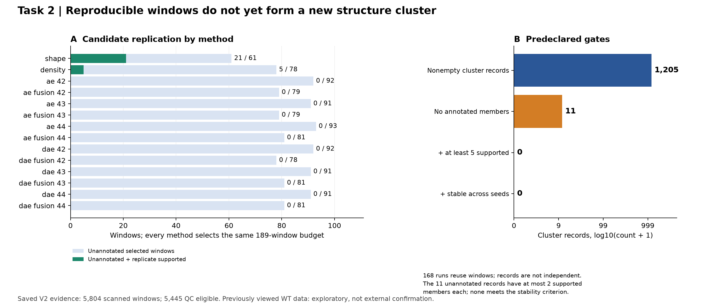
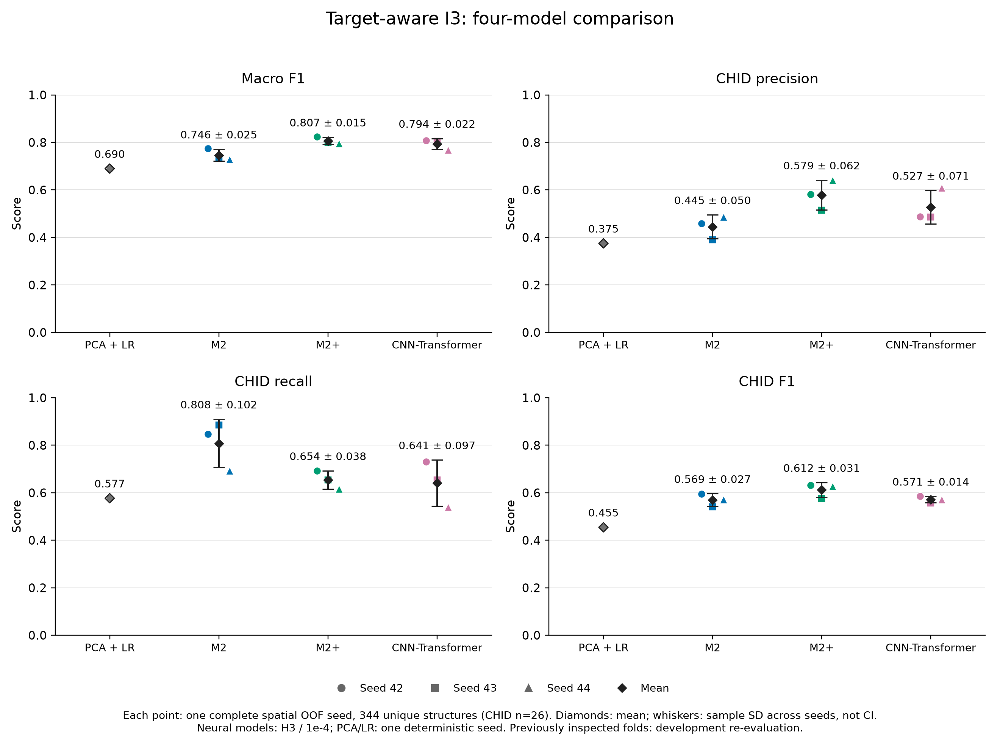
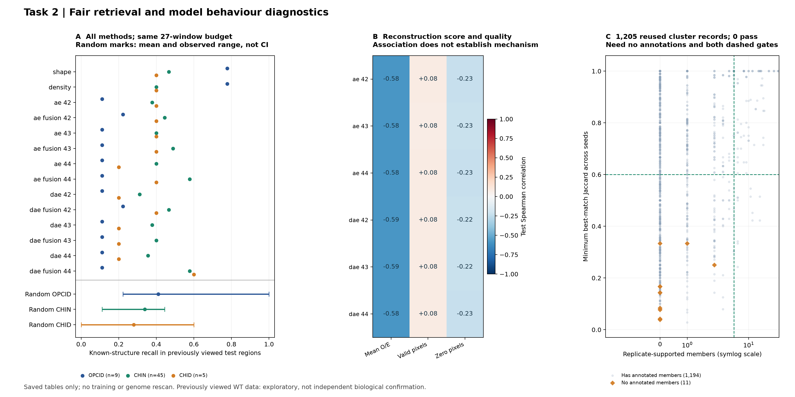
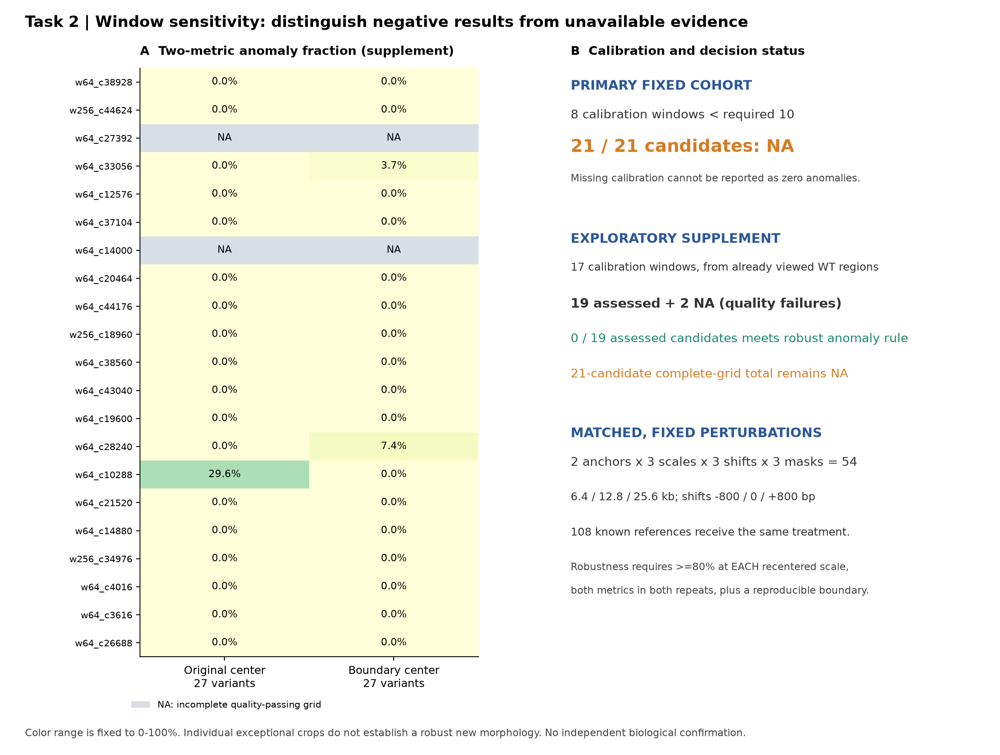
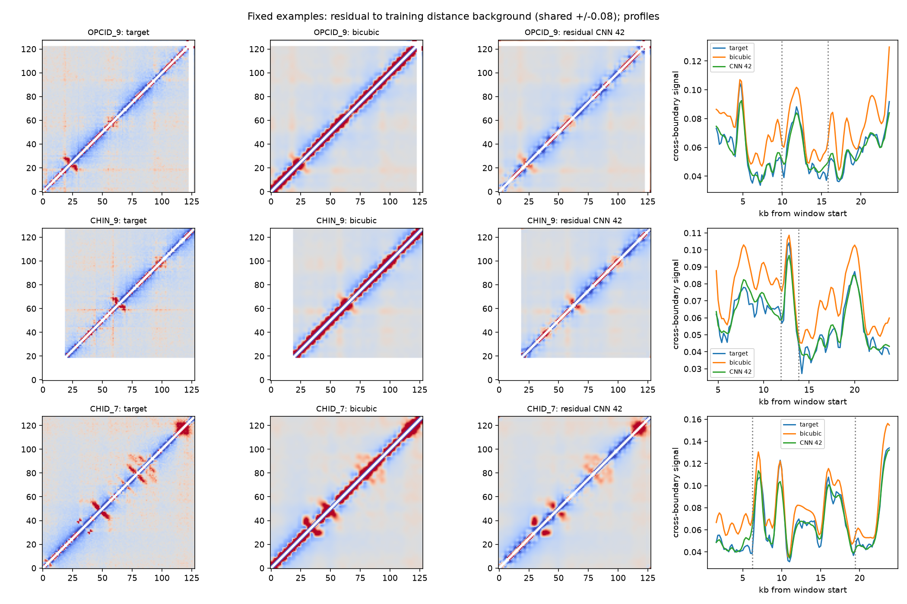

固定预算与筛选

保存表独立复算通过；历史6份AE/DAE权重仍缺失，尚不能重放原训练与评分。
Micro-C 接触矩阵 · 最终代码交付 · 2026-10-15
新版任务一与第一版任务二至六的有效成果统一展示。模型分数、重复支持、信号变化和生物学形态分别评价。
M2+ 是统一四模型比较的当前基准。CHID 与系统性错误仍未通过可靠性验收；没有独立专家真值和新样本，不能声称三类生物学形态已被可靠识别。
344 个作者标注区间，49 个空间组，冻结五折，三个优化 seed。神经模型统一 I3/H3、lr1e-4、40轮末轮。
| 模型 | macro-F1 | CHID F1 |
|---|---|---|
| PCA + LR | 0.6897 | 0.4545 |
| M2 | 0.7464 ± 0.0249 | 0.5691 ± 0.0268 |
| M2+ | 0.8067 ± 0.0153 | 0.6118 ± 0.0308 |
| CNN-Transformer | 0.7941 ± 0.0223 | 0.5711 ± 0.0136 |
±为优化seed样本SD。两个WT视图不扩充独立标签数；外层空间组已查看，当前为开发性复评。

完整核验972个唯一候选、168组聚类和1,205条簇记录：117个窗口获得重复支持，24个未注释支持窗口经空间去重保留21例。11条完全未注释簇最多只有2个支持成员，最高Jaccard为1/3，没有簇通过预设规则。

AE/DAE重建误差与平均O/E有负相关，不能据此认定独特形态。随机观察范围不是置信区间；已查看WT上的诊断不构成外部确认。

保存表独立复算通过；历史6份AE/DAE权重仍缺失，尚不能重放原训练与评分。

主方案8个校准窗口低于最低10，21例均为NA；补充19例可评估、2例质量不足，完整队列仍不能报0异常。
打开固定21候选的新对照、54变体与已知检索证据页 · 原发现阶段证据页 · 完整核验摘要 · 方法、边界与下一轮命令

新对照下20/21基线继续获得支持；1例低于阈值仍保留，2例全网格有质量NA。支持分数不等于新形态。

同位置找回强，类别检索并非全面领先；查询没有CHID。原主形态校准最多8个，不改规则仍须保持NA。
残差CNN的rep1 PSNR为34.332±0.172dB，双三次为24.238dB；边界偏差227.044bp，反而差于双三次177.358bp。图像质量与边界恢复没有同步改善。
正在读取随包矩阵。通过run.py serve浏览可启用拖动对照；下方静态图始终可用。

指标 · 原结果图页 · 逐窗口配对与距离分层
图模型留出距离RMSE为0.3073，低于MDS的0.4614；接触log-Pearson为0.8510，低于MDS的0.9195。坐标单位任意，不代表真实单细胞构象；颜色为宏观域示意。